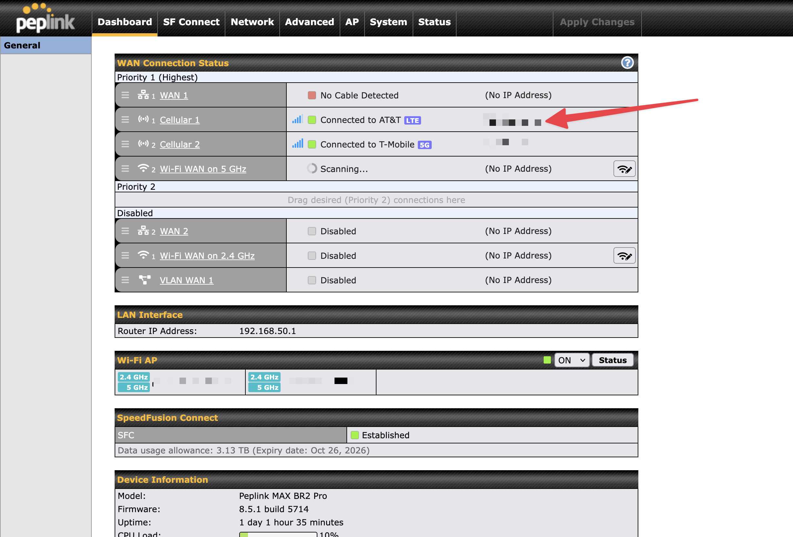
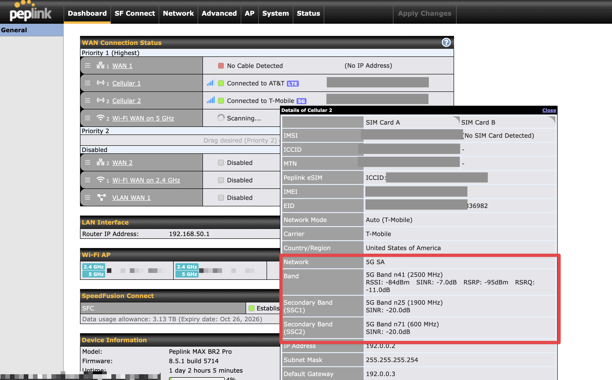

How to Read Your Signal
Your Peplink router reports four key cellular metrics. RSRP is generally the best single indicator of overall signal strength, as it isolates the reference signal from the tower you're connected to. For deeper troubleshooting, compare SINR (noise interference), RSRQ (signal quality), and RSSI (total received power) to pinpoint performance issues.
Keep in mind: strong signal strength (RSRP) doesn't guarantee fast speeds. If SINR or RSRQ are poor, interference or congestion may be limiting your throughput. Always evaluate these metrics together for the full picture.
From the Peplink Dashboard, locate your active cellular connection under WAN Connection Status. Click the IP address next to the cellular modem you want to inspect. This opens the details panel.
In the details panel, scroll to the Band section (highlighted in red below). Here you'll see the connection type, the active band(s), and all four signal metrics (RSSI, SINR, RSRP, and RSRQ) displayed inline. Use the reference tables below to evaluate each value.
What we're seeing here: This modem is connected to T-Mobile on 5G SA (Standalone). That means it is running purely on the 5G NR (New Radio) core network with no LTE anchor required. You can confirm this by the "5G SA" label next to Network.
Notice the modem is using three bands simultaneously: the primary band is n41 (2500 MHz) with full signal metrics shown (RSSI, SINR, RSRP, RSRQ), plus two secondary bands via SSC (Secondary Component Carriers): n25 (1900 MHz) and n71 (600 MHz). This is called carrier aggregation, where the modem combines multiple bands at once to increase total throughput.
On LTE connections, you'll see a similar setup. The router may display a primary band plus one or more secondary bands aggregated together. As a general rule: the more bands being aggregated, the more bandwidth available, and the faster your potential speeds.
| Value | Rating | What It Means |
|---|---|---|
| ≥ -80 dBm | Excellent | Strong signal with maximum data speeds |
| -80 to -90 dBm | Good | Solid signal with good, reliable data speeds |
| -90 to -100 dBm | Fair to Poor | Usable, but may experience drop-outs. Performance degrades as values approach -100 |
| ≤ -100 dBm | No Signal | Connection lost. Consider repositioning antennas or switching carriers |
| Value | Rating | What It Means |
|---|---|---|
| ≥ 20 dB | Excellent | Very clean signal with maximum throughput achievable |
| 13 to 20 dB | Good | Low interference with solid, reliable performance |
| 0 to 13 dB | Fair to Poor | Noise is competing with your signal. Speeds drop significantly near 0 dB |
| ≤ 0 dB | No Signal | Noise overpowers signal. Expect disconnection |
| Value | Rating | What It Means |
|---|---|---|
| ≥ -10 dB | Excellent | High-quality signal with a clean connection and maximum speeds |
| -10 to -15 dB | Good | Good quality with reliable speeds and minimal interference |
| -15 to -20 dB | Fair to Poor | Quality degrading. Possible congestion or cell-edge conditions. Performance drops sharply near -20 |
| ≤ -20 dB | No Signal | Signal quality too low to maintain connection |
| Value | Rating | What It Means |
|---|---|---|
| > -65 dBm | Excellent | Very strong total power under optimal conditions |
| -65 to -75 dBm | Good | Healthy power level with good speeds expected |
| -75 to -85 dBm | Fair | Usable power level. Speeds are adequate but drop-outs are possible |
| -85 to -95 dBm | Poor | Low power. Performance will be severely degraded |
| ≤ -95 dBm | No Signal | Insufficient power. Connection will drop |